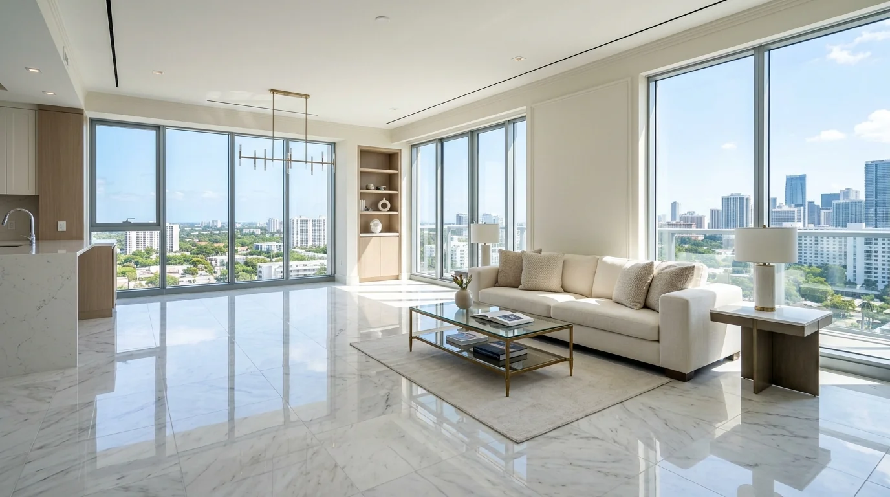
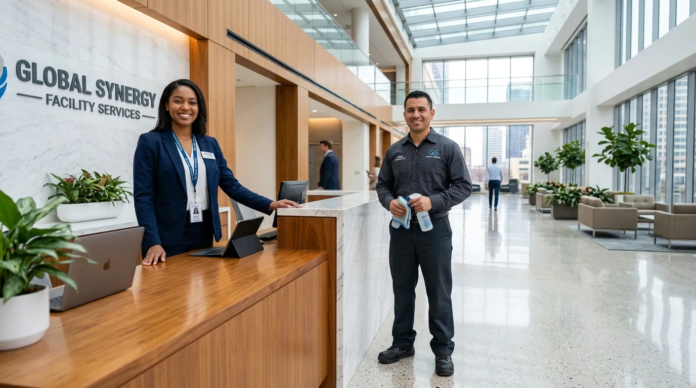
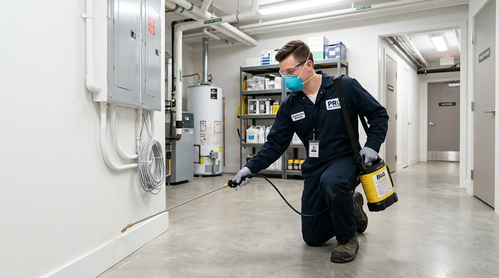
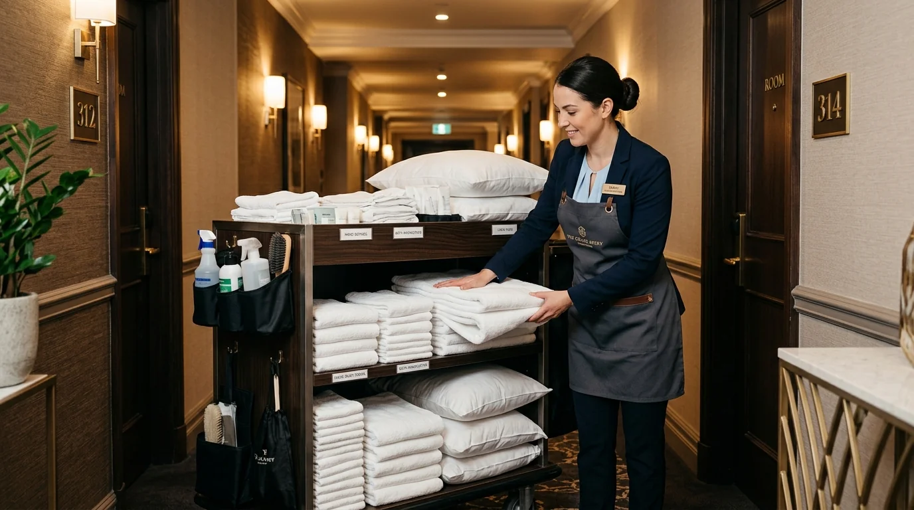

İhtiyacınıza uygun kategoriyi seçerek detayları inceleyebilir, saniyeler içinde ücretsiz fiyat bilgisi oluşturabilirsiniz.
 Yönetim
Yönetim
Kat Mülkiyeti Kanununa tam uyumlu, şeffaf aidat ve profesyonel bina yönetimi.

TemizlikKaba ve ince inşaat kalıntılarından arındırılmış, taşınmaya hazır anahtar teslim temizlik.
 Temizlik
Temizlik
Merdiven, asansör ve bina girişlerinde haftalık düzenli hijyenik bakım.
Plaza ve rezidanslarda vinçli uzman ekiplerle güvenli, lekesiz cam temizliği.

PersonelTesisleriniz için tam sigortalı, deneyimli temizlik ve danışma personeli desteği.

İlaçlamaSağlık Bakanlığı onaylı biyosidal ürünlerle kokusuz, garantili haşere mücadelesi.
Periyodik klor-pH kontrolü ve filtre bakımıyla daima kristal berraklıkta havuzlar.

PersonelÖzel organizasyon ve tesisler için deneyimli servis ve kat hizmetleri kadrosu.
Fiyat hesaplayıcımız ile binanızın özelliklerine göre 60 saniyede yaklaşık maliyet hesaplayabilir veya WhatsApp üzerinden uzman ekibimizle görüşebilirsiniz.